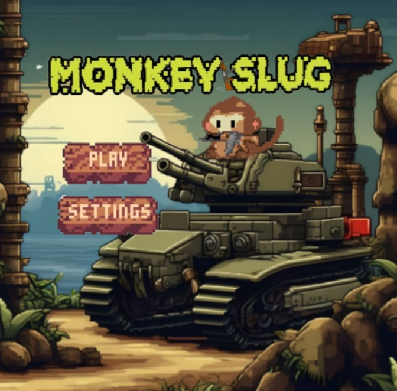
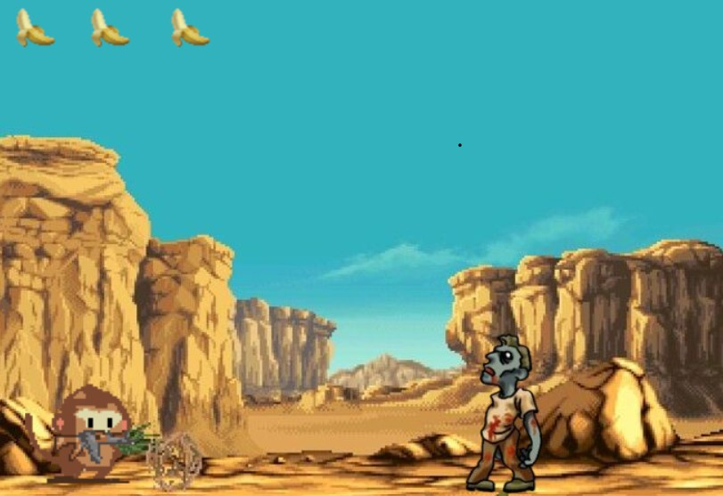
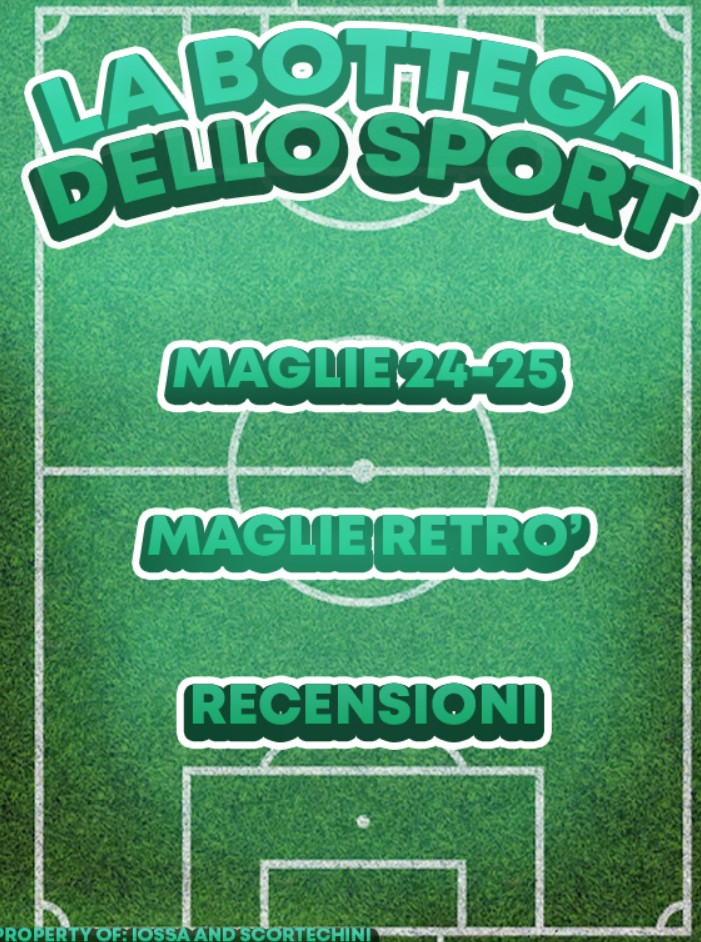
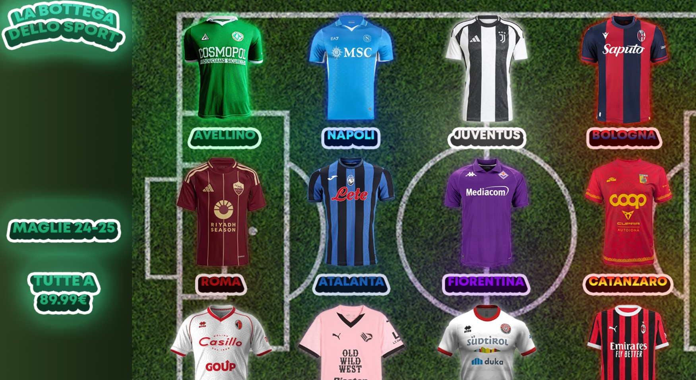
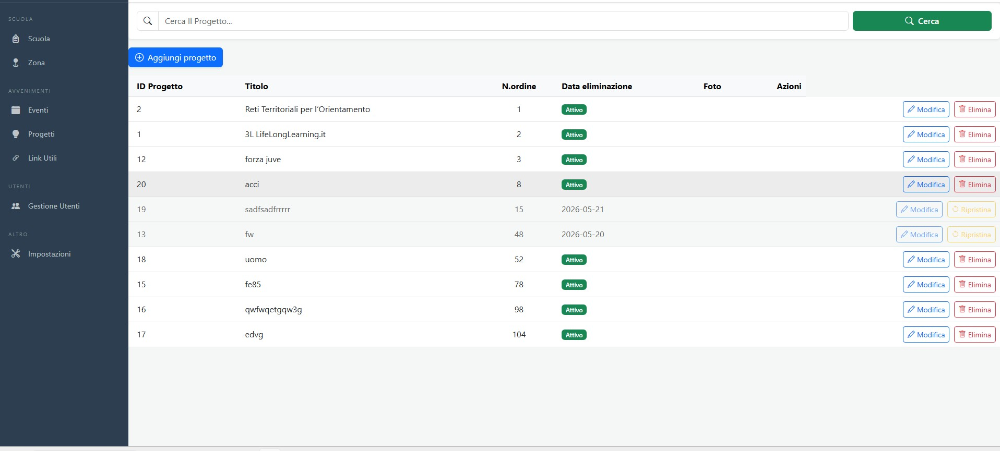

I miei Progetti
Lavori e progetti sviluppati durante il percorso scolastico
Progetti Svolti
Videogioco in C#
Sviluppo completo di un gioco in linguaggio C#. Il progetto ha riguardato la progettazione e implementazione di un videogioco con interfaccia grafica, logica di gioco e gestione degli input utente.


Sito Web
Sviluppo completo di un sito web con HTML, CSS e JavaScript. Il sito è responsive e ottimizzato per diversi dispositivi, con attenzione all'usabilità e all’accessibilità.


3L Orienta
Modifica e miglioramento del sito per la gestione dell'orientamento, rendendolo più chiaro, moderno e facile da utilizzare per studenti e docenti. Interventi su interfaccia, organizzazione dei contenuti e navigazione.
